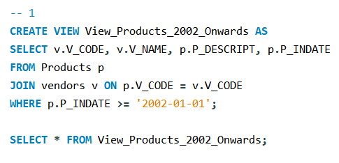
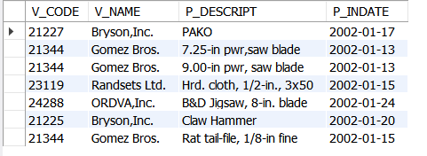

Final Task 5: SQL Views and Procedures
Implemented various SQL views, stored procedures, and functions as per the instructor's guidelines.
- View to display vendor codes and product descriptions from 2002 onwards.
- View for products priced between 100-150.
- View to compute total price of products sold by specific vendors.
- Stored procedure to update vendor names.
- Function to display product descriptions and prices based on parameters.
Query:

Result:
